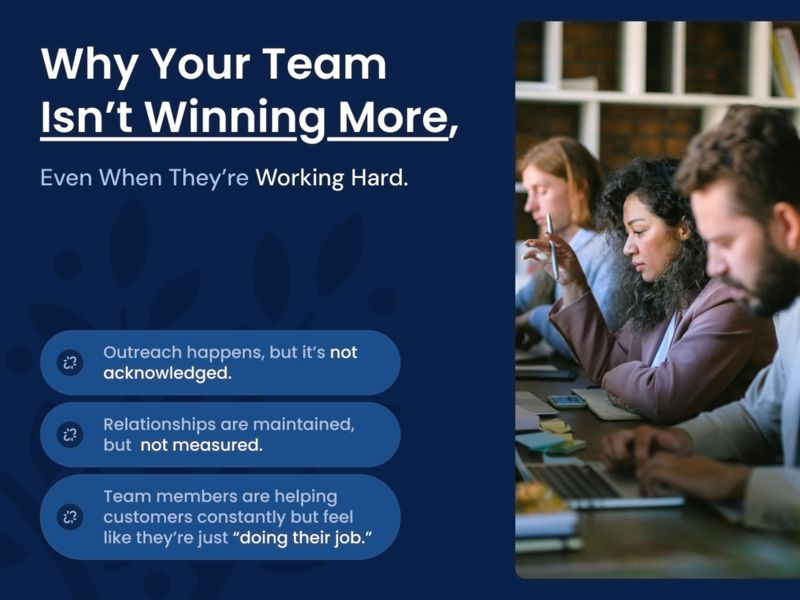
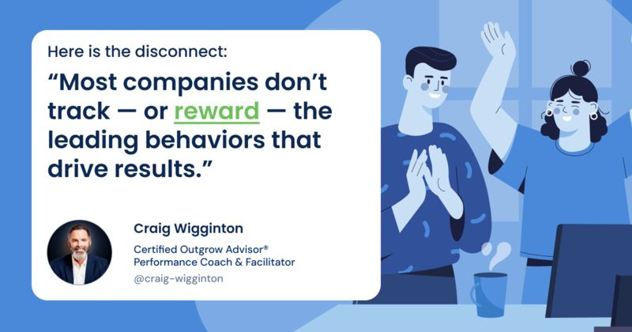
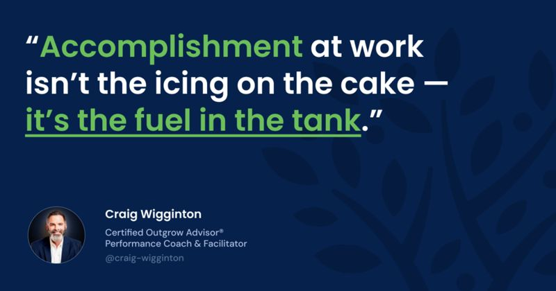
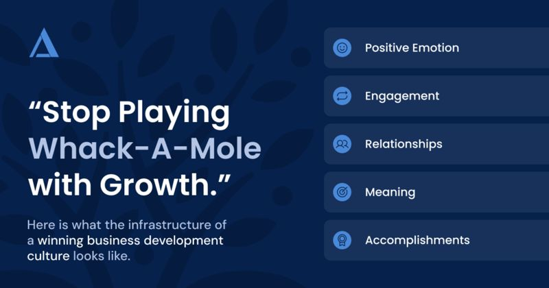

The Culture Multiplier: How Managers Keep Belief Alive When You’re Not in the Room
A proactive culture doesn’t happen by accident. Discover how managers turn belief into a weekly rhythm that keeps teams aligned and consistently growing.
ReadCulture & Mindset

(Part 6 of the PERMA Series)
In our last post, we explored how meaning fuels momentum, and why your team’s belief that their work matters is one of the most powerful levers for sustainable growth. It’s what gets people moving. But once they’re in motion, you need one more ingredient to keep them going:
Because even the most purpose-driven employee can’t stay energized in a system where nothing feels finished, nothing feels celebrated, and nothing feels like a win.
And unfortunately, that’s the reality inside too many small and mid-sized businesses:
In this kind of culture, effort becomes invisible.
And invisible effort eventually becomes exhausting.

So your people swing… but no one notices.
They follow up… but nothing gets said.
They surface a warm opportunity… but it’s not celebrated unless it closes.
That’s a dangerous setup.
Because when results are the only thing that counts, most of your team opts out. Not because they’re not capable but because they’re conditioned to believe that only the closers win.
This creates a deeply broken dynamic:
Meanwhile, the growth engine stalls, not from lack of effort, but from lack of recognized accomplishment.
Let’s call this what it is: an emotional deficit.
When effort isn’t seen, it stops.
And yet, the irony? Your team is likely doing dozens of micro-wins every day:
These are wins.
They are the building blocks of scalable sales culture.
But if you don’t have a system to track and celebrate them, they fade into the background.
Now let’s look at how accomplishment at work — real, visible, emotional accomplishment — becomes the fuel for sustained performance when it’s structured into the way your team works.
Because when people feel like they’re winning every day… they keep swinging every day.
Let’s face it: most businesses only celebrate the finish line.
The big deal closed.
The quarter ended strong.
The customer signed the renewal.
And those are all worth celebrating, no doubt. But if your team only gets to feel successful when a revenue target is hit or a project is completed, you’re missing a massive opportunity to build a high-performance culture.
Because true accomplishment at work — the kind that fuels consistent action — doesn’t happen at the end of the race.
It happens in the daily rhythm of small wins.
And when you start to engineer those wins into the experience of your customer-facing people, here’s what happens:
Let’s break down how that looks in a business running on Outgrow.
Most teams are conditioned to celebrate the close: the contract, the signed scope, the PO. But that leaves 95% of the actual growth-driving behavior invisible.
That’s why Outgrow helps you track and spotlight small, meaningful actions:
Think of this as your Accomplishment Scorecard. It’s not a dashboard of vanity metrics. It’s a scoreboard of helpfulness.
And when people see their contributions adding up, they lean in.
It’s not enough to “appreciate people more.” You need a system.
That’s where the Monday Outgrow Huddle comes in. During this 15-minute meeting, your team reviews:
This isn’t performance theater. It’s identity reinforcement.
When someone says, “I swung five times last week, and one of those turned into a quote,” they’re not bragging. They’re reinforcing the belief that progress is being made.
That belief is what powers behavior.
Here’s where accomplishment at work gets truly sticky: when it’s connected back to meaning.
Your leadership team (and your managers) should be looking to recognize things like:
This kind of feedback turns a swing into a moment of purpose.
And when the loop closes like that, the behavior repeats.
Because people don’t burn out from hard work.
They burn out from work that goes unrecognized and feels unproductive.
Closed-won deals are easy to measure. But what about:
When you begin to measure those things as part of your growth infrastructure, your team sees that progress is happening, even in slower seasons.
Momentum builds. Morale lifts. Sales happen more often, not through force… but through flow.
Accomplishment at work isn’t the icing on the cake. It’s the fuel in the tank.

Let’s be clear: if your team only gets to feel accomplished at work when they close a deal or hit quota, most of them will go months without ever feeling successful.
And if that’s the case, why would they keep swinging?
Accomplishment at work must be engineered — not as a reward, but as a rhythm.
That’s what Outgrow does. It gives your customer-facing team a simple, repeatable system for experiencing progress and purpose every single week.
Here’s how the process works:
In most organizations, a “win” is synonymous with a closed deal or a signed contract. But that definition excludes 80% of the daily work that makes those wins possible.
The Outgrow system expands the definition of accomplishment to include:
This simple shift unlocks a huge emotional dividend. Suddenly, your team doesn’t have to “win big” to feel like they’re making progress. They just need to act intentionally.
That’s a huge unlock for seller-doers, service reps, and ops teammates who don’t “own” the close but absolutely influence the outcome.
If you want your people to keep swinging, they need to see that their effort is working.
That’s why the Outgrow Tracking Form is a lightweight log of:
This is not some rigid CRM protocol. It’s fast, simple, and human.
And it gives your team real-time visibility into the behaviors that build pipeline so they stop wondering, “Is this doing anything?” and start saying, “This is working.”
Every Monday, your team comes together for a brief, high-energy sync called the Outgrow Weekly Huddle.
Here, we:
You’ll hear things like:
In these moments, accomplishment at work becomes communal.
People see themselves – and each other – as contributors.
The emotional payoff gets shared.
And the desire to keep helping amplifies.
The final piece? Manager and executive communication.
Outgrow equips leaders to speak the language of accomplishment:
Why does this matter?
Because people believe what their leaders emphasize.
And when you emphasize forward motion, effort, and helpfulness, you create a culture where progress is enough to keep going — which ultimately drives performance anyway.
This is how accomplishment becomes a renewable resource.
You don’t wait for the quarter to end.
You don’t rely on endorphins from closing big deals.
You bake accomplishment into the daily experience of work.
And when your language reinforces small wins, your team builds the confidence to go after big ones.
Your team doesn’t need to work harder.
They need to feel like they’re winning more often.
Because when effort is visible, appreciated, and celebrated… people keep moving.
And that’s what creates true, scalable accomplishment:
This is what most CEOs miss.
They build systems to track lagging indicators (like revenue).
But they ignore the emotional leading indicators; the signals that tell you your team is swinging with confidence and positivity.
With Outgrow, we bring those signals into the light.
We help you build a system where:
That’s what fuels 15–30% revenue growth. Not magic. Not hustle. Momentum.
And here’s the kicker:
Your team already wants to win.
They just need to know they’re allowed to.
So the question becomes:
Are you giving them a system that shows them their impact?
If not, let’s fix that together.
Message me directly to schedule a strategy conversation.
We’ll walk through what your team’s current rhythm looks like, where effort is getting lost, and how to build a repeatable culture of success inside every customer-facing role, starting with sales.
You don’t have to wait for big wins.
You can engineer small ones and let them stack, week after week.
That’s the Outgrow way.

Let’s pull back the lens.
Over this 6-part series, we’ve taken you through a blueprint for how to build a revenue-producing, emotionally-resilient sales culture:
These aren’t just warm, fuzzy ideas.
They’re the infrastructure of a winning business development culture.
Here’s what happens when you install all five:
And you, the Owner or CEO, stop playing whack-a-mole with disconnected departments because the team is aligned, engaged, and moving forward together.
That’s what Outgrow delivers.
A proactive rhythm.
A unified culture.
A team that believes in themselves, their work, and your customers.
You don’t need more sales scripts.
You need a sales system that builds belief into the process and momentum into the metrics.
And you don’t have to figure it out alone.
Again, let’s talk.
Reach out today and we’ll have a short, focused conversation about what Outgrow could look like inside your business, from first swing to sustained growth year after year.
This article is the sixth article in our PERMA series, where we explore how Positive Psychology principles fuel the Outgrow system to transform sales cultures and drive predictable growth. Explore the full series:
Keep reading
A proactive culture doesn’t happen by accident. Discover how managers turn belief into a weekly rhythm that keeps teams aligned and consistently growing.
ReadMeaning isn’t a luxury — it’s a performance driver. See how creating a high-performance sales culture turns morale and engagement into profit.
ReadThe issue isn't laziness. The cost of disengaged employees is lost momentum, but small, consistent actions can reignite engagement and sales.
Read